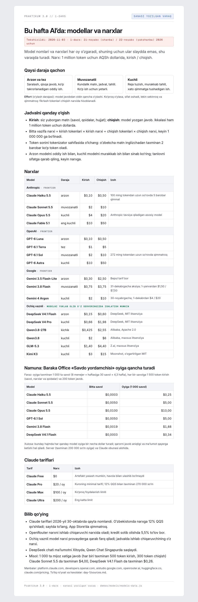

«Bu hafta AI’da» varag‘i: qanday o‘qish
Sahifa: index.html (ekranda) va handouts/pdf/bu-hafta-ai-da.pdf (bosma).
Narxlar har oy o‘zgaradi: varaqdagi «Tekshirildi» sanasiga qarang.
Nima uchun
Model tanlash va xarajatni hisoblash uchun bitta sanasi yozilgan jadval. Model nomlari va narxlari slaydlarda emas, shu yerda turadi.
Qadamlar
- Ishingiz qaysi darajaga to‘g‘ri kelishini tanlang: arzon va tez, muvozanatli yoki kuchli.
- Jadvaldan o‘sha darajadagi modelning kirish va chiqish narxini oling.
- Bitta vazifaning tokenlarini tokenizator sahifasida o‘lchang.
- Hisoblang: bitta vazifa narxi = (kirish tokenlari × kirish narxi + chiqish tokenlari × chiqish narxi) / 1 000 000.
- Oylik narx = bitta vazifa narxi × oyiga necha marta.
Har bir ustun nima
| Ustun | Nima |
|---|---|
| Daraja | Arzon, muvozanatli, kuchli: ish murakkabligiga qarab |
| Kirish | Siz yuborgan matnning narxi, 1 million token uchun dollar |
| Chiqish | Model yozgan javobning narxi; odatda kirishdan bir necha barobar qimmat |
| Izoh | Muddatli aksiya, litsenziya yoki shart |
Namuna: Baraka Office «Savdo yordamchisi»
Faraz: oyiga taxminan 1 000 savol (8 menejer × haftasiga 30 savol × 4,3 hafta), har biriga 1 500 token kirish va 200 token javob.

| Model | Bitta savol | Oyiga |
|---|---|---|
| Claude Haiku 5.5 | (1 500 × 0,10 + 200 × 0,50) / 1 000 000 = 0,00025 $ | 0,25 $ |
| Claude Sonnet 5.5 | (1 500 × 2 + 200 × 10) / 1 000 000 = 0,005 $ | 5,00 $ |
| Claude Opus 5.5 | (1 500 × 4 + 200 × 20) / 1 000 000 = 0,01 $ | 10,00 $ |
| DeepSeek V4.1 Flash | (1 500 × 0,15 + 200 × 0,60) / 1 000 000 = 0,000345 $ | 0,34 $ |
Qanday o‘qish: bu hajmda har qanday model oyiga bir necha dollar. Qarorni javob aniqligi va ma’lumot qayerga ketishi hal qiladi, narx emas. Server (oyiga taxminan 200 000 so‘m) va Claude obunasi alohida.
Ko‘p uchraydigan xatolar
- Faqat kirish narxiga qarash: javob uzun bo‘lsa, chiqish narxi ko‘p bo‘ladi.
- Eski varaqdan foydalanish: narx oyda bir necha marta o‘zgaradi.
- O‘zbekcha matnni inglizcha bilan bir xil hisoblash: o‘zbekcha taxminan 2 barobar ko‘p token.
Tayyor
Bitta vazifangizning oylik narxini uchta model uchun hisoblab, birini sababi bilan tanlay olasiz.
Praktikum 3.0 · 1-dars · 21-noyabr (shanba) / 22-noyabr (yakshanba) 2026 · manba: day-1/demos/models/models.qollanma.md